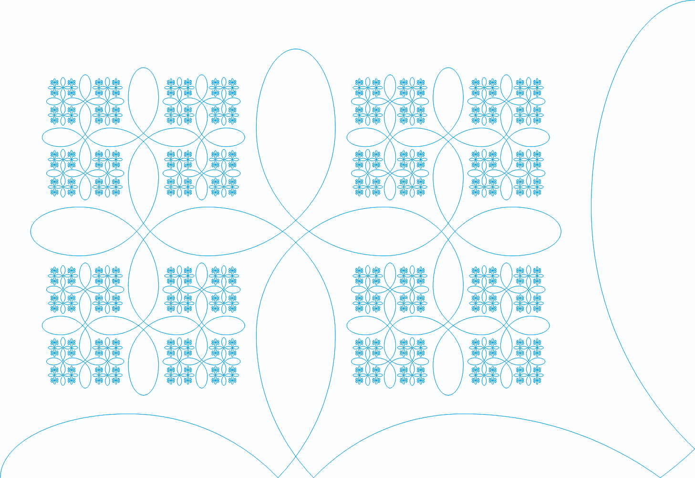
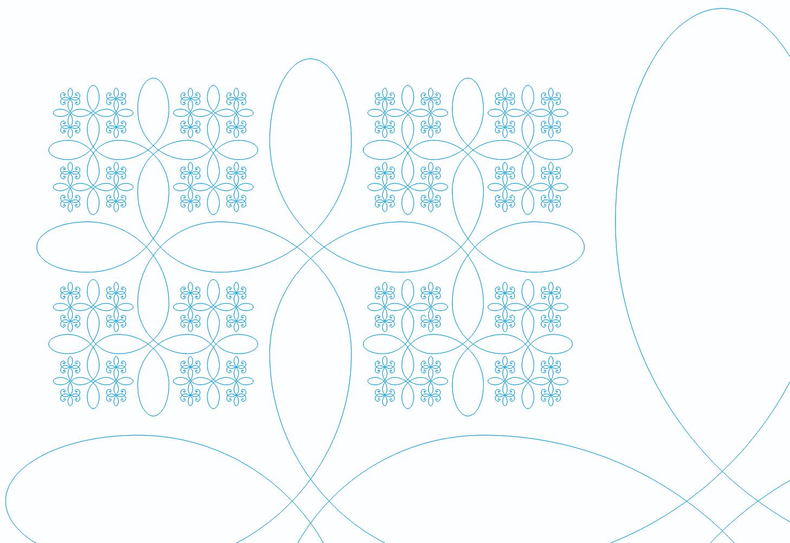

Фрактал жизни
Фрактал жизни - графическое изображение, на основе которого создан гармонизатор "Зеркало Жизни" (авторами гармонизатора являются профессор Яшар Ибадов из Азербайджана и Василий Павлович Гоч из Украины). 
{kind=link}
Фрактал жизни - Направление в будущее
"Зеркало Жизни" отображает основы жизни в математическом и физическом планах. Оно состоит из двух символов жизни - янского и иньского ключей.
|
Янский ключ |
 Иньский ключ |
При этом янский ключ находится сверху, а иньский снизу. Когда движутся эти графические узоры мы как будто проникаем в пространство, и каждый раз, приближаясь, этот узор увеличивается. При этом, одновременно, рождаются новые более микроскопические элементы "Зеркала Жизни", которые дополняют друг друга и приближаются к нам. Таким образом - движение никогда не заканчивается. Существует и обратный процесс - фракал удаляется от нас, все элементы уходят в даль, и вскоре вовсе исчезают - сходясь в точке. Так организовано наше прошлое - всё уходит, и остаётся лишь точка, в которой находится весь наш опыт. Жизнь имеет такую же структуру: что существует в микромире, то и повторяется в макромире.

{kind=link}
Фрактал жизни - Направление в прошлое